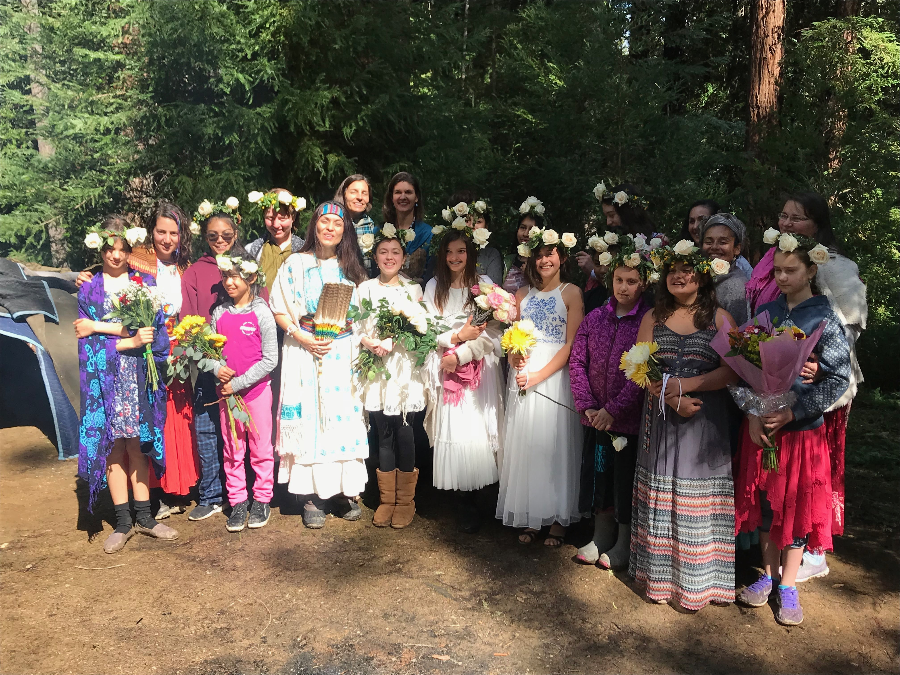

I work with individuals and groups to create and craft unique rituals for the larger or smaller life cycle moments. Transitions deserve attention. A ritual is a beautiful way of putting attention on something, and it can be quite healing to both create and experience it. I will work with you to intuitively design rituals that are authentic to you and your circumstance, and then support you to enact them. We will incorporate elements of nature, embodiment, symbolism that is personally significant to you, solo or communal, and a supportive plan for accountability/implementation.
I am a coach for At the Well, an organization that connects women around the world through transformative practices inspired by ancient Jewish Wisdom.
Read about my experience with my own moon circle here.
I also facilitate circles in Spanish for Latin American immigrant women who want to explore sisterhood, personal growth, and spirituality.
